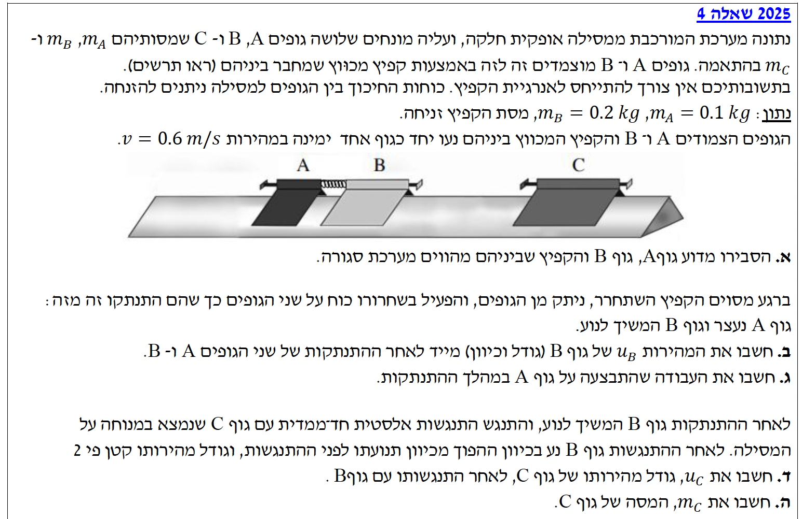

פתרון מוסבר: שאלה 4
בגרות פיזיקה / מכניקה 2025 / שאלה 4
פתרון מלא, מפורט ומדורג הכולל ניתוח כוחות ושימור אנרגיה ותנע.
עודכן:
--- --:--:--
מבט כללי על השאלה
תלמידים יקרים, לפניכם פתרון מלא לשאלה 4 בבגרות במכניקה. בשאלה זו ננתח מערכת של גופים המחוברים בקפיץ ונעים על גבי מסילה חלקה. הבעיה עוסקת בהבנת המושג של "מערכת סגורה", ומיישמת את חוק שימור התנע החד-ממדי, משפט עבודה-אנרגיה, והתנגשויות אלסטיות.
ננתח את הבעיה צעד אחר צעד ונבין את העקרונות הפיזיקליים העומדים מאחוריה. למידה מהנה!

[תמונת השאלה המקורית]
לא נמצאה תמונה בשם question-image.png באותה תיקייה.
מה נתון:
- מסילה אופקית חלקה (אין חיכוך: \( f = 0 \)).
- שני גופים, A ו-B, מחוברים באמצעות קפיץ מכווץ.
- הגופים והקפיץ נעים יחד ימינה.
מה מחפשים:
הסבר פיזיקלי מדוע המערכת הכוללת את גוף A, גוף B והקפיץ מהווה "מערכת סגורה".
נוסחאות מהדף ועקרונות:
\( \Sigma \vec{F} = m \vec{a} \)
מערכת סגורה:
\( \Sigma \vec{F}_{ext} = 0 \)
פתרון והסבר:
כדי לקבוע אם מערכת היא סגורה, עלינו לבחון את שקול הכוחות החיצוניים הפועלים עליה. נבחר ציר \( x \) חיובי ימינה וציר \( y \) חיובי כלפי מעלה. תאוצת הכובד היא \( g = 10 \text{ m/s}^2 \) בכיוון השלילי של ציר ה-\( y \). נצייר תרשים כוחות (FBD) עבור המערכת כולה (גופים A, B והקפיץ שביניהם) כאובייקט אחד כדי להמחיש זאת:
על פי החוק השני של ניוטון בציר האנכי (\( y \)), מכיוון שאין תנועה אנכית למרכז המסה של המערכת, התאוצה היא אפס:
\[ \Sigma F_{y,ext} = N_A + N_B - m_A g - m_B g = 0 \]
כוחות הכובד (\( m_A g, m_B g \)) והכוחות הנורמליים (\( N_A, N_B \)) הם אכן כוחות חיצוניים, אך הם מאזנים זה את זה כך ששקולם שווה לאפס. בציר האופקי (\( x \)), הכוחות הפועלים נובעים אך ורק מהאינטראקציה בתוך המערכת: הקפיץ מפעיל כוח דחיפה על גופים A ו-B, ועל פי החוק השלישי של ניוטון, הגופים מפעילים כוחות תגובה שווים ומנוגדים חזרה על הקפיץ. מכיוון שכל הכוחות הללו מופעלים על ידי חלקי המערכת זה על זה, הם מוגדרים ככוחות פנימיים. כאשר בוחנים את המערכת השלמה, הכוחות הפנימיים הללו באים בצמדים המבטלים זה את זה אלגברית בחישוב השקול הכולל. בנוסף, המסילה חלקה, ולכן אין שום כוח חיכוך חיצוני שיפעל נגד התנועה.
מכיוון ששקול הכוחות החיצוניים הפועלים על המערכת שווה לאפס (\( \Sigma \vec{F}_{ext} = 0 \)), המערכת נחשבת למערכת סגורה לאורך ציר התנועה, ומתקיים בה חוק שימור התנע.
💡 טיפ מורה:
חשוב להבחין בין "אין כוחות חיצוניים" לבין "שקול הכוחות החיצוניים הוא אפס". כוחות הכובד והנורמל בהחלט פועלים (הם כוחות חיצוניים המופעלים על ידי כדור הארץ והמשטח), אך מכיוון שהם מבטלים זה את זה, השפעתם הכוללת על תנע המערכת היא אפס!
מה נתון:
- מסות (MKS): \( m_A = 0.1 \text{ kg} \), \( m_B = 0.2 \text{ kg} \).
- מהירות התחלתית משותפת: המערכת נעה ימינה. נגדיר את ציר \( x \) החיובי ימינה. לכן \( v_0 = +0.6 \text{ m/s} \).
- מהירות סופית של A: נתון שגוף A נעצר, \( u_A = 0 \text{ m/s} \).
מה מחפשים:
את גודל וכיוון המהירות של גוף B מיד לאחר ההתנתקות (\( u_B \)).
נוסחאות מהדף:
\( m_A \vec{v}_A + m_B \vec{v}_B = m_A \vec{u}_A + m_B \vec{u}_B \)
חישוב:
המצב ההתחלתי (לפני ההתנתקות): שני הגופים נעים יחד באותה מהירות \( v_0 \). המצב הסופי (לאחר ההתנתקות): מהירות גוף A היא \( u_A \) ומהירות גוף B היא \( u_B \). נציב את הנתונים במשוואת שימור התנע:
\[ m_A v_0 + m_B v_0 = m_A u_A + m_B u_B \]
\[ (0.1) \cdot (0.6) + (0.2) \cdot (0.6) = (0.1) \cdot (0) + (0.2) \cdot u_B \]
\[ 0.06 + 0.12 = 0 + 0.2 \cdot u_B \]
\[ 0.18 = 0.2 \cdot u_B \]
נחלץ את \( u_B \):
\[ u_B = \frac{0.18}{0.2} = 0.9 \text{ m/s} \]
מסקנה: \( u_B = 0.9 \text{ m/s} \) (גודל וכיוון: ימינה)
💡 טיפ מורה:
שימו לב להגיון הפיזיקלי: לפני ההתנתקות, שני הגופים חלקו את התנע הכולל של המערכת. לאחר ההתנתקות, גוף A נעצר לחלוטין ובעצם "מסר" את כל התנע שלו לגוף B (שכן התנע הכולל נשמר). לכן, זה הגיוני מאוד שגוף B ינוע עכשיו מהר יותר ממהירותו ההתחלתית (0.9 במקום 0.6)!
מה נתון:
- מסת גוף A: \( m_A = 0.1 \text{ kg} \).
- מהירות התחלתית של A: \( v_{0A} = 0.6 \text{ m/s} \).
- מהירות סופית של A: \( u_A = 0 \text{ m/s} \).
מה מחפשים:
את העבודה הכוללת (\( W \)) שהתבצעה על גוף A במהלך ההתנתקות.
נוסחאות מהדף:
\( W_{\text{כוללת}} = \Delta E_k \)
\( E_k = \frac{1}{2}mv^2 \)
חישוב:
נחשב את השינוי באנרגיה הקינטית של גוף A (אנרגיה סופית פחות אנרגיה התחלתית):
\[ W_A = \Delta E_{k,A} = E_{k,A}^{\text{סופי}} - E_{k,A}^{\text{התחלתי}} \]
\[ W_A = \frac{1}{2} m_A u_A^2 - \frac{1}{2} m_A v_{0A}^2 \]
נציב את הנתונים:
\[ W_A = \frac{1}{2} \cdot (0.1) \cdot (0)^2 - \frac{1}{2} \cdot (0.1) \cdot (0.6)^2 \]
\[ W_A = 0 - 0.05 \cdot 0.36 \]
\[ W_A = -0.018 \text{ J} \]
מסקנה: \( W = -0.018 \text{ J} \)
💡 טיפ מורה:
האם העבודה אמורה לצאת שלילית? בהחלט! גוף A נע ימינה, אך הקפיץ המכווץ הפעיל עליו כוח דחיפה שמאלה (נגד כיוון התנועה). כאשר כוח פועל בכיוון מנוגד להעתק, העבודה שהוא עושה היא שלילית. כתוצאה מכך, "גודל המהירות קטן" והאנרגיה הקינטית של הגוף יורדת.
מה נתון:
- מהירות גוף B לפני ההתנגשות: \( v_{1B} = 0.9 \text{ m/s} \) (ימינה, חיובי).
- מהירות גוף C לפני ההתנגשות: \( v_{1C} = 0 \text{ m/s} \) (נמצא במנוחה).
- מהירות גוף B לאחר ההתנגשות: חזר אחורה וגודלה קטן פי 2, לכן: \( u_{2B} = -\frac{0.9}{2} = -0.45 \text{ m/s} \).
- סוג ההתנגשות: התנגשות אלסטית לחלוטין.
מה מחפשים:
את מהירותו של גוף C לאחר ההתנגשות עם גוף B, שנסמנה \( u_C \) (או \( u_{2C} \)).
נוסחאות מהדף:
\( \vec{v}_1 - \vec{v}_2 = -(\vec{u}_1 - \vec{u}_2) \)
חישוב:
נתאים את האינדקסים לנוסחה: גוף 1 הוא B, וגוף 2 הוא C. נציב את הערכים שידועים לנו בזהירות עם הסימנים:
\[ v_{1B} - v_{1C} = -(u_{2B} - u_C) \]
\[ 0.9 - 0 = -(-0.45 - u_C) \]
נפתח את הסוגריים בצד ימין (מינוס כפול מינוס נותן פלוס):
\[ 0.9 = 0.45 + u_C \]
נעביר אגפים כדי לחלץ את \( u_C \):
\[ u_C = 0.9 - 0.45 = 0.45 \text{ m/s} \]
מסקנה: \( u_C = 0.45 \text{ m/s} \)
💡 טיפ מורה:
מלכודת נפוצה כאן היא לשכוח את סימן המינוס של גוף B לאחר ההתנגשות. המילה "הפוך" בשאלה חייבת להיתרגם לסימן מתמטי מנוגד לכיוון הציר שבחרנו! שימוש נכון במשוואת המהירויות היחסיות חוסך לנו עבודה עם משוואות ריבועיות מסובכות של אנרגיה קינטית.
מה נתון:
- מסת גוף B: \( m_B = 0.2 \text{ kg} \).
- מהירויות לפני ההתנגשות: \( v_{1B} = 0.9 \text{ m/s} \), \( v_{1C} = 0 \text{ m/s} \).
- מהירויות לאחר ההתנגשות: \( u_{2B} = -0.45 \text{ m/s} \), \( u_C = 0.45 \text{ m/s} \).
מה מחפשים:
את מסתו של גוף C (\( m_C \)).
נוסחאות מהדף:
\( m_B \vec{v}_{1B} + m_C \vec{v}_{1C} = m_B \vec{u}_{2B} + m_C \vec{u}_C \)
חישוב:
נציב את כל הערכים הידועים לנו למשוואת שימור התנע כדי למצוא את הנעלם היחיד, \( m_C \):
\[ (0.2) \cdot (0.9) + m_C \cdot (0) = (0.2) \cdot (-0.45) + m_C \cdot (0.45) \]
\[ 0.18 + 0 = -0.09 + 0.45 \cdot m_C \]
נעביר את המספרים לאגף אחד:
\[ 0.18 + 0.09 = 0.45 \cdot m_C \]
\[ 0.27 = 0.45 \cdot m_C \]
נחלק במקדם של \( m_C \):
\[ m_C = \frac{0.27}{0.45} = 0.6 \text{ kg} \]
מסקנה: \( m_C = 0.6 \text{ kg} \)
💡 טיפ מורה:
בואו נעשה בדיקת הגיון (Sanity check) פיזיקלית לתוצאה שלנו: גוף B (שמסתו קטנה, 0.2 ק"ג) התנגש בגוף C. לאחר ההתנגשות, גוף B ניתז לאחור. תופעה זו של "הירתעות לאחור" מתרחשת רק כאשר גוף קל מתנגש בגוף בעל מסה גדולה יותר (או שמחובר לקיר). התוצאה שלנו, \( m_C = 0.6 \text{ kg} \), אכן גדולה ממסת גוף B, ולכן התוצאה הגיונית מאוד מבחינה פיזיקלית!